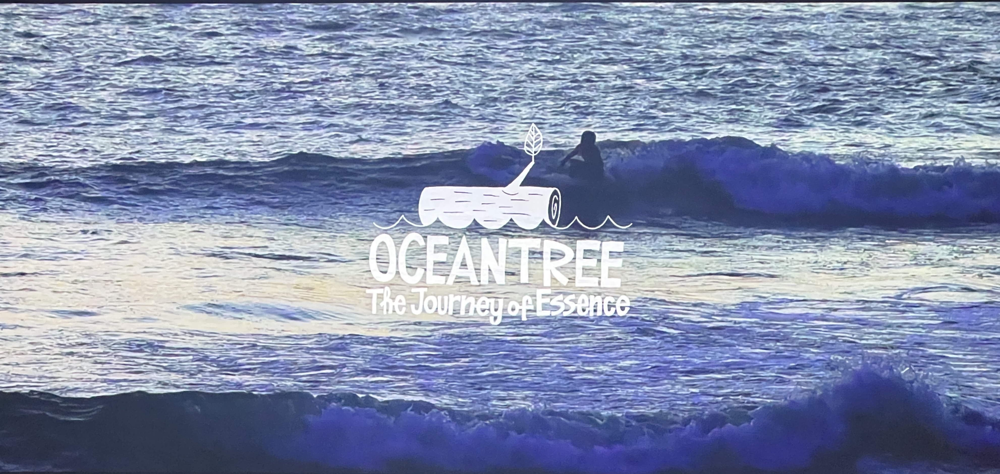

Ocean Tree 試写会

感想
一見、正反対に見える森と海が二つがアライアを通じてつながっていくという過程が描かれていて、感動的であった。
さらに、そこに伝統工芸である漆がつながり、より、地産地消や伝統の継承というテーマについて考えさせられた。
「日本人はアライアにうまく乗ろうとする。だから、上手く乗れないとやめてしまう。」という言葉があった。
何事も楽しむことを忘れてしまっては、
新しいものを受け入れることも、夢中になれることも失ってしまうという 意味だと思う。
日本人の「努力は美」「苦しいことは美」という古い考えがしみついて、
楽しむこと＝悪 と考えてしまっている人も多いのかもしれない。
しかし、そのような考えかたをいつまでもしていては、
充実して満足できる人生を送る道からは離れてしまうと考えさせられた。
学び
京都の山奥で木を選ぶ所から始まり、たくさんの人々とのサポートを得ながら完成に近づいていく過程で、
動くことの大切さ、発信することの重要性について実感した。
きっと、このようにアライアを作るという事を大学卒業前から動いて、
発信しているからこそ、この活動がここまで支援され、発展しているのだと思う。
だからこそ、私も、この時間が有り余っている大学時代から、
怖気ずくのではなく、周りの目を気にするのではなく、
やりたいことに向かって突き進もうという勇気を貰った。